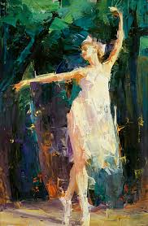
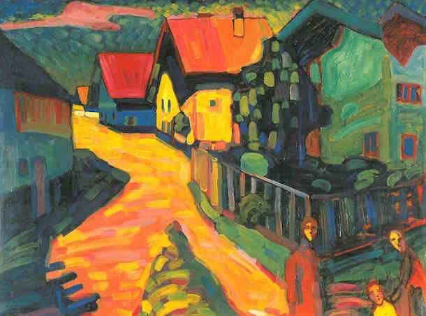
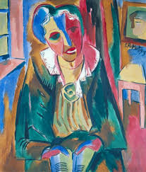
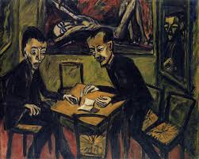

Modernism
Modernism is both a philosophical movement and an art movement that, along with cultural trends and changes,...
Expressionism

Expressionism is a
modernist movement, initially in poetry and painting, originating in Germany at the beginning of the 20th century.
Its typical trait is to present the world solely from a subjective perspective, distorting it radically for emotional
effect in order to evoke moods or ideas. Expressionist artists have sought to express the meaning of emotional experience
rather than physical reality.Expressionism developed as an avant-garde style before the First World War. It remained
popular during the Weimar Republic, particularly in Berlin. The style extended to a wide range of the arts, including
expressionist architecture, painting, literature, theatre, dance, film and music.The term is sometimes suggestive of
angst. In a historical sense, much older painters such as Matthias Grünewald and El Greco are sometimes termed
expressionist, though the term is applied mainly to 20th-century works. The Expressionist emphasis on individual and
subjective perspective has been characterized as a reaction to positivism and other artistic styles such as Naturalism
and Impressionism.
While the word expressionist was used in the modern sense as early as 1850, its origin is sometimes traced to paintings
exhibited in 1901 in Paris by obscure artist Julien-Auguste Hervé, which he called Expressionismes. An alternative view
is that the term was coined by the Czech art historian Antonin Matějček in 1910 as the opposite of impressionism:
"An Expressionist wishes, above all, to express himself... (an Expressionist rejects) immediate perception and builds
on more complex psychic structures... Impressions and mental images that pass through ... people's soul as through a
filter which rids them of all substantial accretions to produce their clear essence [...and] are assimilated and condense
into more general forms, into types, which he transcribes through simple short-hand formulae and symbols."
Important precursors of Expressionism were the German philosopher Friedrich Nietzsche (1844–1900), especially his
philosophical novel Thus Spoke Zarathustra (1883–92); the later plays of the Swedish dramatist August Strindberg
(1849–1912), including the trilogy To Damascus 1898–1901, A Dream Play (1902), The Ghost Sonata (1907); Frank Wedekind
(1864–1918), especially the "Lulu" plays Erdgeist (Earth Spirit) (1895) and Die Büchse der Pandora (Pandora's Box)
(1904);

the American poet Walt Whitman's (1819–92) Leaves of Grass (1855–91); the Russian novelist Fyodor Dostoevsky
(1821–81); Norwegian painter Edvard Munch (1863–1944); Dutch painter Vincent van Gogh (1853–90); Belgian painter James
Ensor (1860–1949);[9] and pioneering Austrian psychoanalyst Sigmund Freud (1856–1939).Wassily Kandinsky, Der Blaue Reiter,
1903In 1905, a group of four German artists, led by Ernst Ludwig Kirchner, formed Die Brücke (the Bridge) in the city of
Dresden. This was arguably the founding organization for the German Expressionist movement, though they did not use the
word itself. A few years later, in 1911, a like-minded group of young artists formed Der Blaue Reiter (The Blue Rider)
in Munich. The name came from Wassily Kandinsky's Der Blaue Reiter painting of 1903. Among their members were Kandinsky,
Franz Marc, Paul Klee, and Auguste Macke. However, the term Expressionism did not firmly establish itself until 1913.
Though mainly a German artistic movement initially and most predominant in painting, poetry and the theatre between
1910 and 1930, most precursors of the movement were not German. Furthermore, there have been expressionist writers of
prose fiction, as well as non-German-speaking expressionist writers, and, while the movement had declined in Germany with
the rise of Adolf Hitler in the 1930s, there were subsequent expressionist works.
Egon Schiele, Portrait of Eduard Kosmack, 1910, oil on canvas, 100 × 100 cm, Österreichische Galerie Belvedere
Expressionism is notoriously difficult to define, in part because it "overlapped with other major 'isms' of the
modernist period: with Futurism, Vorticism, Cubism, Surrealism and Dadaism."Richard Murphy also comments,
“the search for an all-inclusive definition is problematic to the extent that the most challenging expressionists such as
Kafka, Gottfried Benn and Döblin were simultaneously the most vociferous `anti-expressionists.'

”What can be said, however, is that it was a movement that developed in the early twentieth century, mainly in Germany,
in reaction to the dehumanizing effect of industrialization and the growth of cities, and that "one of the central means
by which expressionism identifies itself as an avant-garde movement, and by which it marks its distance to traditions and
the cultural institution as a whole is through its relationship to realism and the dominant conventions of representation.
" More explicitly, that the expressionists rejected the ideology of realism.El Greco View of Toledo, 1595/1610 is a Mannerist precursor of 20th-century expressionism.[16]
The term refers to an "artistic style in which the artist seeks to depict not objective reality but rather the subjective
emotions and responses that objects and events arouse within a person." It is arguable that all artists are
expressive but there are many examples of art production in Europe from the 15th century onward which emphasize extreme
emotion. Such art often occurs during times of social upheaval and war, such as the Protestant Reformation, German
Peasants' War, and Eighty Years' War between the Spanish and the Netherlands, when extreme violence, much directed at
civilians, was represented in propagandist popular prints. These were often unimpressive aesthetically but had the
capacity to arouse extreme emotions in the viewer.Expressionism has been likened to Baroque by critics such as art
historian Michel Ragon[18] and German philosopher Walter Benjamin.[19] According to Alberto Arbasino, a difference
between the two is that "Expressionism doesn't shun the violently unpleasant effect, while Baroque does. Expressionism
throws some terrific 'fuck yous', Baroque doesn't. Baroque is well-mannered.
Postmodernism
Postmodernism is a body of art movements that sought to contradict some aspects of modernism or some...
Contemporary Art
Contemporary Art is the art of today, produced in the second half of the 20th century or in the 21st century....
Surrealism
Surrealism is a cultural movement that began in the early 1920s, and is best known for its visual artworks and writings.
Abstract Art
Abstract Art uses visual language of shape, form, color and line to create a composition which may exist with a degree of...